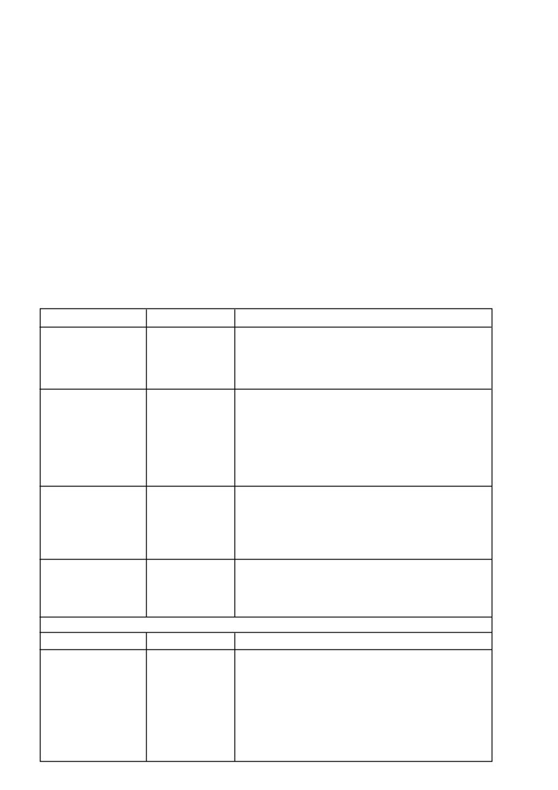

5.1
VERENIGBAARHEID
•
CRUISER
kan gebruik word op saad wat vooraf met ‘n
swamdoder behandel is. Indien
CRUISER
in kombinasie met
‘n swamdoder saadbehandelingsmiddel gebruik word, moet
die saad eers met die swamdoder volgens die verskaffer se
instruksies behandel word. Behandel daarna met
CRUISER
.
•
Indien CONCEP
®
960 EC (L5051) op graansorghumsaad
gebruik word, moet die saad eers met CONCEP
®
960 EC
behandel word, toegelaat word om af te droog en daarna met
CRUISER
behandel word.
•
CRUISER
moet nie saam met Teprosyn Mo/P gebruik word
nie aangesien die produk die saadbedekking van
CRUISER
belemmer.
•
In gevalle waar ander saadbehandelingsmiddels wat nie op
die etiket gespesifiseer word nie, saam met
CRUISER
gebruik
word, aanvaar Syngenta Suid-Afrika nie aanspreeklikheid vir
die wanfunksionering van
CRUISER
nie.
5.2
MENGINSTRUKSIES
•
CRUISER
is ‘n rooi vloeibare konsentraat wat eers met ‘n
klein hoeveelheid water vermeng moet word. Vermeng deeglik
met die aanbevole hoeveelheid water voordat dit by die saad
gevoeg word. Die mengsel moet binne 24 uur na voorberei-
ding gebruik word.
5.3
SAADBEHANDELING
•
CRUISER
kan
met meeste grootmaat saadbehandelings-
apparate toegedien word, mits die produkmengsel deur
sproeipunte of roterende skywe direk op die saad in die
behandelingsgang toegedien word of op die plaas in ‘n
sementmenger of ‘n asentriese doelgemaakte kanteldrom.
Dit is belangrik dat enige grootmaat toedieningsapparaat met
CRUISER
gekalibreer word aangesien vloeieienskappe mag
verskil van ander saadbehandelingsmiddels.
•
Voeg die korrekte hoeveelheid
CRUISER
by skoon water
sodat die aanbevole volume mengsel per saadhoeveelheid nie
oorskry word nie.
VOORBEELD:
Die aanbevole volume mengsel om 100
kg mieliesaad mee te behandel is 1 500 m
l
. Voeg 500 m
l
CRUISER
by 1 000 m
l
water (= 1 500 m
l
mengsel).
•
Voeg die mengsel by die saad terwyl dit meng. Meng totdat
die saad eweredig bedek en droog is, en geen oortollige
mengsel aan die kante of onder in die menger agterbly nie.
Moet nie vir langer as nodig meng nie.
•
Dit is wenslik om saad direk voor gebruik te behandel en nie
onnodig te laat staan nie. Behandel slegs genoeg saad vir
onmiddelike gebruik.
OPMERKING
: Maak alle apparaat deeglik skoon na behandeling
en toediening.
CRUISER
/ 2
6. TOEDIENINGSHOEVEELHEID
GEWAS/PLAAG
GRAANSORGHUM
Kleinvalsdraadwurms
(Gonocephalum
spp.)
KATOEN
Katoenplantluis
(
Apis gossypii)
Katoenbladspringer
(
Jacobiella facialis
)
Swartkatoenkewer
(
Syagrus rugifrons
)
KORING
Russiese koringluis
(Diuraphis noxia)
SONNEBLOM
Doodhouertjies
(
Protostrophus
spp.)
Plaag
Swartmieliekewer
(
Heteronychus arator)
Valsdraadwurms
(Somaticus
en
Gonocephalum
spp.)
Doodhouertjies
(Protostrophus spp
.)
Bontmieliekewer-larf
(
Astylus atromaculatus
)
DOSIS / 100 kg sd
500 m
l
plus
1
l
water
875 m
l
plus
625 m
l
water
340 m
l
plus
860 m
l
water
1 000 m
l
plus
500 m
l
water
Dosis
0,5 mg ai/saad
Voeg water by in die
verhouding van
2 dele water vir
een deel
CRUISER
REMARKS
Tydens hoë plaagdruk kan saailingskade voorkom ten spyte van behandeling
met
CRUISER.
CRUISER
behandelde saad moet verkieslik nie dieper as 5 sentimeter
geplant word nie.
Tydens hoë plaagdruk kan ‘n matige katoenplantluis infestasie steeds
voorkom ten spyte van behandeling met
CRUISER
.
Aanvanklike blaarbeskadiging kan voorkom aangesien Swartkatoenkewers
eers op plante moet voed om gedood te word.
Ten spyte van behandeling met
CRUISER
kan ‘n matige infestasie van
Russiese koringluis steeds voorkom.
Die behandeling van koringsaad met
CRUISER
gee nie noodwendig volle
beheer van Russiese koringluis getalle nie. Daar mag nog luise op plante
voorkom. Die nadelige effek van die luise op die groei van die plant en gevolg-
like afname in opbrengs word beperk.
Aanvanklike blaarbeskadiging kan voorkom aangesien Doodhouertjies eers
op plante moet voed om gedood te word.
Opmerkings
Tydens hoë plaagdruk kan saailingskade voorkom ten spyte van behandeling
met
CRUISER.
Saad wat met
CRUISER
behandel is moet verkieslik tussen 3 en 5 sentimeter
diep geplant word.
Gebruik onderstaande tabelle om die regte dosisse te bepaal.
MIELIES
